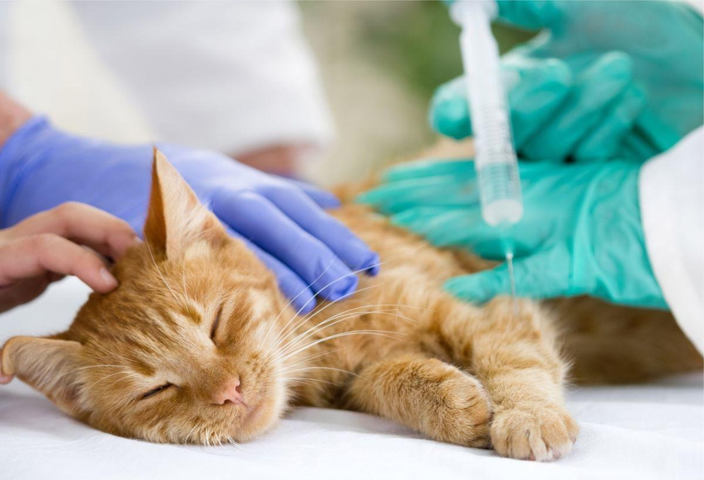

Just as vaccinations are vital for human health, they play a crucial role in ensuring the well-being of our pets. Pet vaccinations are designed to protect your furry friends from various contagious and often fatal diseases, contributing to a longer, healthier life. Here at PetFolio, we realize that pet education is crucial and today we are sharing the importance of vaccines, the different types available, and how they contribute to the overall health of pets.
Vaccines work by preparing the immune system to recognize and fight specific pathogens (viruses or bacteria). They contain antigens, which mimic the disease-causing organism but don’t actually cause the disease. When your pet is vaccinated, their immune system is stimulated to produce antibodies. If they ever come into contact with the actual disease, their immune system is ready to recognize and fight it off, preventing the disease or lessening its severity.
These are considered vital for all pets based on the universal risk of exposure, the severity of the disease, or the transmissibility to humans. Examples include:
These are administered depending on a pet’s lifestyle, exposure risk, and the prevalence of the disease in a particular area. Examples include:
Puppies and kittens should start their vaccinations at around 6-8 weeks of age, receiving boosters every 3-4 weeks until they are 16 weeks old. Adult pets typically need boosters every one to three years, depending on the vaccine and local regulations. Consistency is key, and your veterinarian will provide a customized vaccination schedule tailored to your pet’s specific needs and lifestyle.
While vaccines are generally safe, some pets may experience mild side effects such as soreness at the injection site, mild fever, or lethargy. Serious side effects are extremely rare. The risk of not vaccinating and potentially exposing your pet to deadly diseases far outweighs the risk of potential side effects from vaccines.
Rabies is a fatal disease that can be transmitted to humans, making the rabies vaccine legally required in many parts of the world. Ensuring your pet is up-to-date on their rabies vaccine is not just about their health, but also about public safety.
Titer tests measure the level of antibodies in the blood, potentially eliminating the need for unnecessary booster shots. However, this practice is more common in dogs than in cats, and the decision to use titer testing should be made in consultation with your veterinarian.
Vaccinating your pets is an essential component of responsible pet ownership. It’s a proactive approach to healthcare that safeguards your pet against preventable diseases, contributing to a longer, healthier, and happier life. Always consult with your veterinarian to determine the appropriate vaccination schedule for your pet, ensuring they are protected at every stage of their life. Remember, when it comes to the health and well-being of your furry friends, an ounce of prevention is truly worth a pound of cure.